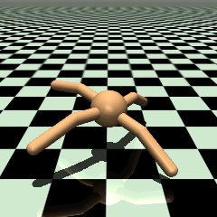
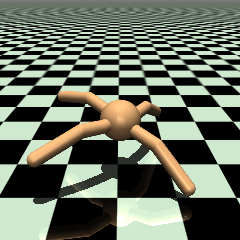
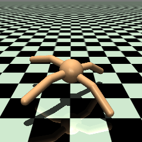
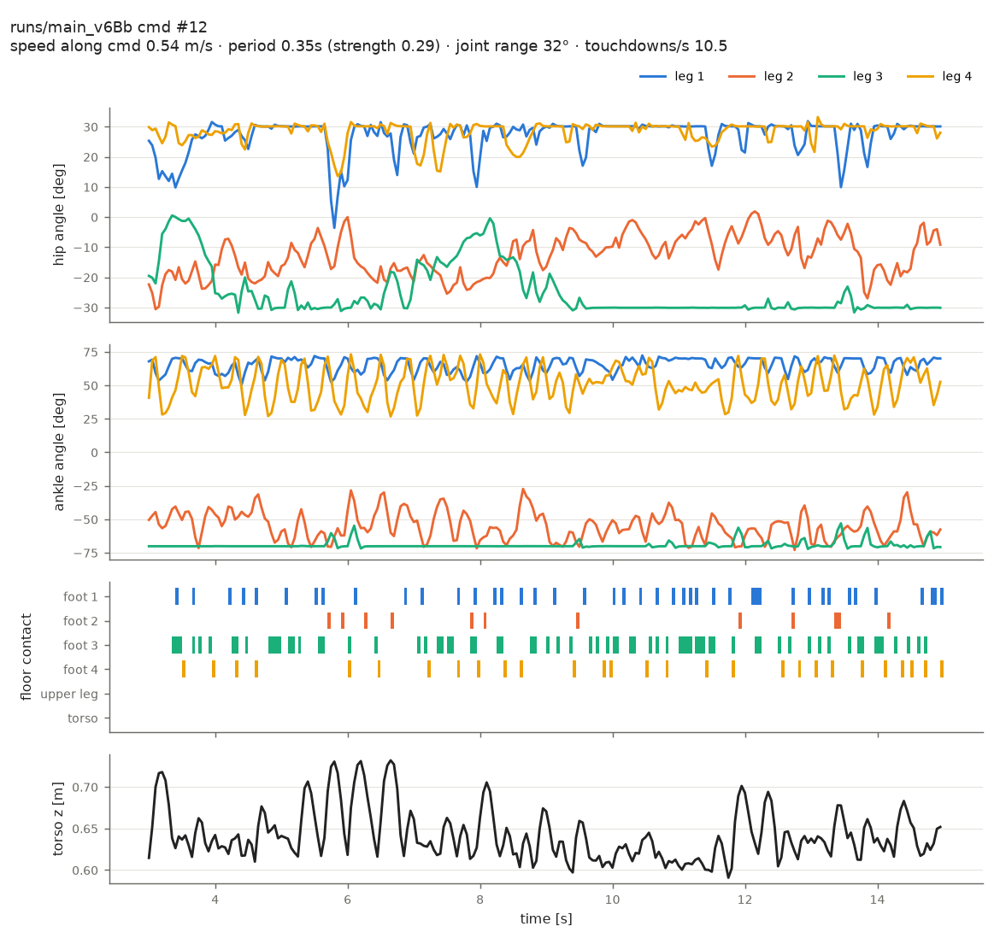
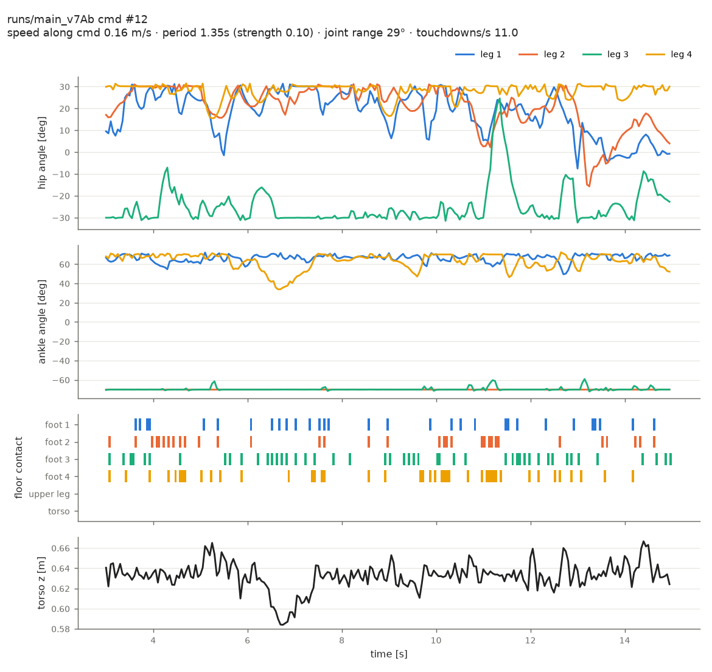
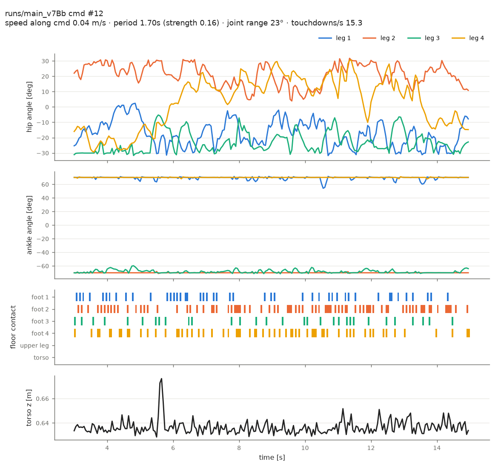

v7 보행 영상 (노이즈 끔, 3~15초)
같은 명령 비교: 앞으로 1.0 m/s (명령 #12)

v6Bb 기준: 0.54 m/s, 몸통 출렁임 큼, 발목 사용

v7Ab (w_z=1): 0.16 m/s, 발목 거의 고정
v7Bb (w_z=3): 0.04 m/s, 발목 한계에 고정, 제자리 종종걸음
v7Bb 다른 방향
v7Bb 1.0 m/s @ 270° (명령 #10): 0.15 m/s

v7Bb 0.5 m/s @ 90° (명령 #6): 0.06 m/s
관절 각도·발 접촉·몸통 높이

v6Bb #12

v7Ab #12

v7Bb #12